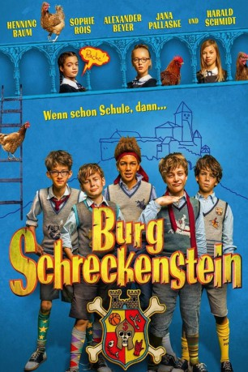

#5895 Burg Schreckenstein
 
 IMDB-Wertung: 6.3 / 10
IMDB-Wertung: 6.3 / 10  Metascore: 0
Metascore: 0 
Er soll aufs Internat. Die Nachricht trifft den elfjährigen Stephan wie ein Vorschlaghammer. Nicht nur, dass sich seine getrennt lebenden Eltern dauernd streiten, jetzt eröffnet ihm seine Mutter Melanie auch noch, dass sie ihn auf ein Internat in die alte Burg Schreckenstein stecken wollen. Sie hoffen, dass sich so Stephans Noten verbessern. Doch die Schreckensteiner Jungs entpuppen sich keinesfalls als Streber. Ottokar, Mücke Strehlau und Dampfwalze nehmen Stephan nach anfänglichen Differenzen in ihren Rittergeheimbund auf und dann geht der Internatsspaß erst richtig los!
Jahr: 2016
Dauer: 96 Minuten
FSK:
Land: Deutschland Studio: Concorde FilmverleihTonspuren:
Untertitel: Deutsch,
Auflösung: 1080p (1920x800) Größe: 4065 MB
Genre: Komödie, Abenteuer, Familie
Regisseur: Ralf Huettner
Drehbuch: Philip Dunne
Soundtrack:
Darsteller:
 Jana Pallaske als Melanie
Jana Pallaske als Melanie- Henning Baum als Rex
 Sophie Rois als Direktorin Horn
Sophie Rois als Direktorin Horn Alexander Beyer als Jean
Alexander Beyer als Jean- Jasmin Barbara Mairhofer als Turnlehrerin
- Maurizio Magno als Stephan
- Harald Schmidt als Graf Schreckenstein
- Chieloka Nwokolo als Dampfwalze
- Benedict Glöckle als Ottokar
- Caspar Kryzsch als Mücke
- Eloi Christ als Strehlau
- Nina Goceva als Bea
- Mina Rueffer als Inga
- Paula Donath als Alina
- Matthias Lier als Sebastian
- Martin Thaler als Lehrer Waldmann
Datei: X:\Kinder Collections\Burg Schreckenstein\Burg Schreckenstein (2016, FSK, 1920x800).mkv seit 03.04.2017
Festplatte: Kinder-Filme+Trick
 Alle Filme aus Gruppe 'Kinder Collections\Burg Schreckenstein'
Alle Filme aus Gruppe 'Kinder Collections\Burg Schreckenstein'